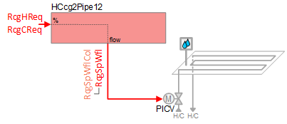
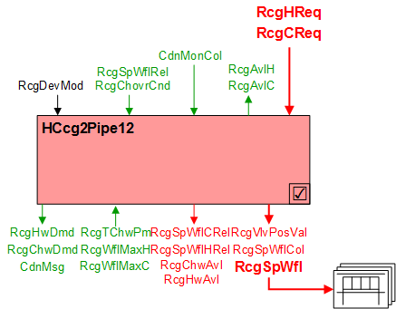
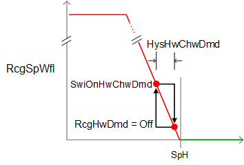
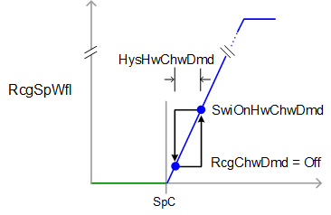

加热/Chilled 天花板 2 管，外部流量控制 (HCcg2Pipe12)
 | 该应用程序函数生成一个water flow setpoint到pressure independent control valve用于天花板辐射装置，例如天花板或被动式冷梁，由 2 管转换系统提供热水或冷冻水。 水流量设定点是根据接收到的供暖和制冷请求信号（来自房间控制器）计算的。 支持多面板控制。 有一个可选的二进制输入用于冷凝检测。 该应用程序函数 ONLY 可用于： |
Required elements and how to configure them:
元素 | I/O | 信号类型 |
|---|---|---|
RcgSpWfl "Radiant ceiling setpoint for water volume flow" | On-board output, Radiant ceiling valve position 1 | Setpoint for water volume flow, 0…10V |
Function
下图显示了与此应用程序函数关联的 BACnet 对象。主要信号流程总结如下：
天花板辐射供暖或制冷要求（RcgHReq / RcgCReq）被接收并处理成辐射天花板阀门位置的输出信号（RcgSpWFl).
基本功能：接受来自相关房间控制器的请求信号并将其映射到适当的水流量设定点。通过设备模式逻辑开关传递它；将结果作为命令输出到控制设备的 BACnet 对象。
Note
为了降低冷凝风险，可以通过冷凝监控功能和/or露点温度监控功能（可选；必须配置）中的切断逻辑，在设备保护优先级将调节水流量设定值设置为零。露点温度监测功能将房间内的露点温度与冷冻水温度进行比较。

| 命令或请求（或相关） |
| 条件或状态或可用性的通知 |
| 设备模式 |


Hot/Chilled water flow setpoint modulation:为了响应加热或冷却需求，调节水流量设定值/adjusted以将室温控制在设定值。为了响应特殊模式（例如预热、冷却或安全条件）的外部触发，设备模式可以设置为关闭或完全打开。
Note
这个AF不进行循环控制；它的主要目的是运行命令。循环控制进程（对于此 AF）在“房间”AF 中进行管理，该房间与此 AF 协作以命令终端设备。
External water flow controller / valve:水流设定值 (RcgSpWFl) 通过 0-10V DC 信号驱动外部水流控制器/阀门。
Multiple panel control:辐射天花板水设定点收集对象 (RcgSpWflCol）可以参考和控制多个天花板阀门执行器。
辐射天花板阀门位置物体（RcgSpWfl) 由辐射天花板阀门位置收集对象 (RcgSpWflCol）；该集合对象是任何/所有的公共节点RcgSpWfl对象。的价值RcgSpWfl来自 RcgSpWflVal。
Condensation monitoring with cut-off switch:凝露监测仪（CdnMon) 二进制输入对象由冷凝监视器集合对象 (CdnMonCol）；该集合对象是任何/所有的公共节点CdnMon二进制输入对象。
这CdnMon使用 OR 语句分析对象。如果一个或多个对象检测到凝结，则二进制结果对象 (CdnMonRs) 从 0 切换到 1（开）。当单个安全跳闸时，所有面板关闭（设备模式设置为关闭并且冷却阀关闭）。
范围EnCdnMonIn必须设置为 1：是，切断开关才能起作用（请参阅Configuration).
Dew point temperature monitoring with cut-off logic:该 AF 监控主冷冻水温度 (RcgTChwPm) 并将其与空间的当前露点温度进行比较。 （露点温度 (TDwp) 在别处计算并通过内部信号接收。）
当 RcgTChwPm 低于露点温度可配置差值 (TDiffDwpChwMin) 时，设备模式将在优先级 4 处设置为关闭，并在优先级 5 处命令冷却阀关闭。当 RcgTChwPm 升至 TDiffDwpChwMin 加上可配置死区 (HysTDiffDwpChw) 以上时，设备模式将被释放。
参数 EnTDwp 必须设置为 1：是，切断逻辑才能发挥作用（请参阅Configuration).

Changeover: 这Radiant ceiling changeover condition多状态对象（RcgChovrCnd）提供从中央工厂收到的有关加热/冷却转换状态的信息。支持三种状态：
- Neither (the plant is switching to / from heating or cooling, and neither is available)
- Heating
- Cooling
Device mode:设备模式的输入信号是多状态值。
RcgDevMod支持以下状态：
- Off
- Control mode (modulation)
- Fully open, heating (allows maximum flow for flushing the water circuit)
- Fully open, cooling (allows maximum flow for flushing the water circuit)
Heating available status:当天花板可用于加热时，二进制输出信号为“Radiant ceiling available for heating" (RcgAvlH）将为“是”（可用）。RcgAvlH系统使用它来调节加热资源。例如，如果需要供暖，但天花板不可用，因为它们已经处于最大容量（因为设备模式完全打开），则RcgAvlH将发出“否”信号，并且将激活温度控制序列中的下一个可用加热资源。
要使加热可用状态为“是”，设备模式必须等于“控制模式”（调制）。
还，RcgChovrCnd必须表明中央设备已转为供暖。
Cooling available status:当天花板可用于冷却时，二进制输出信号为“Radiant ceiling available for cooling" (RcgAvlC）将为“是”（可用）。RcgAvlC系统使用它来调节冷却资源。例如，如果需要冷却，但天花板不可用，因为它们已经处于最大容量（因为设备模式完全打开），则RcgAvlC将发出“否”信号，并且将激活温度控制序列中的下一个可用冷却资源。
要使冷却可用状态为“是”，设备模式必须等于“控制模式”（调制）。
还，RcgChovrCnd必须表明中央设备已转为冷却。
Supply chain interface outputs
CdnMsg 是一个布尔压缩消息，具有两种可能的状态：
- Normal (both the condensation monitor input and the dew point monitoring logic output are False)
- Alert (either the condensation monitor input or the dew point monitoring logic output is True)
如果 CdnMsg 在指定数量的冷梁中切换到警报，则主工厂可以采取适当的措施。例如，初级冷冻水温度设定点可以设置为更高的值。
RcgHwDmd支持以下状态：
- Off (no demand signal)
- Heating demand (demand signal is active)
- Warm-up (Hot water demand is initiated when plant operating mode is set to warm-up)
RcgChwDmd支持以下状态：
- Off (no demand signal)
- Cooling demand (demand signal is active)
- Free cooling (cooling device is in free cooling mode)
当有多余的冷却能力时，中央设备可以启动自然冷却。在某些条件下，房间可以在没有明确的制冷需求的情况下利用剩余的制冷能力；室温必须低于与当前室内气候模式（舒适、预舒适等）相关的设定点。这种类型的自然冷却不同于“节能器”自然冷却，后者使用外部空气风门。
Supply chain interface inputs
热水可用性/冷冻水可用性的输入信号是由中央命令确定的二进制值[否|是]。它们通过供应链组通信进行命令，以实现 TOa 相关的设备锁定。每个放弃的默认值为“是”。
RcgHwAvl:如果外部空气温度高于高限值，则 RcgHwAvl 设置为“否”，并且加热阀关闭。 （有关更多信息，请参阅 Central AF SplyHwxx）
RcgChwAvl:如果外部空气温度低于下限值，则 RcgChwAvl 设置为“否”，并且冷却阀关闭。 （有关更多信息，请参阅 Central AF SplyChwxx）
如果由于某种原因 RcgHwAvl 和 RcgChwAvl 均为“否”，则设备模式 (RcgDevMod) 将在优先级 9 处设置为 Off。
下图说明了控制调制和相关功能。


Configuration
 Objects
Objects
描述 | 目的 | 类型 | 默认值 |
|---|---|---|---|
Radiant ceiling maximum water volume flow for cooling | RcgWflMaxC | ACnfVal | 100.0 [l/h] |
Radiant ceiling maximum water volume flow for heating | RcgWflMaxH | ACnfVal | 100.0 [l/h] |
 Parameters
Parameters
描述 | 范围 | 默认值 |
|---|---|---|
Manual control mode 1:Auto | CtlModMan | 1:Auto |
Condensation prevention | ||
Enable condensation monitor input 0:No | EnCdnMonIn | 0:No |
Enable dewpoint temperature 0:No | EnTDwp | 0:No |
Minimum difference dewpoint temperature/chilled water temperature | TDiffDwpChwMin | 1 [K] |
Hysteresis for minimum difference dewpoint temperature/chilled water temperature | HysTDiffDwpChw | 1 [K] |
Hot/chilled water demand | ||
Switch-on point for hot/chilled water demand | SwiOnHwChwDmd | 4 [%] |
Hysteresis for hot/chilled water demand | HysHwChwDmd | 2 [%] |
Internal settings – do not change | ||
Temperature difference unit | TDiffUnit | [K] |
Interface
界面 | 描述 | 类型 | 参考号 | 拥有者 | |
|---|---|---|---|---|---|
RcgSpWflCol | Collection of radiant ceiling setpoint for water volume flow | ColView | ● | - | |
| RcgSpWfl | Radiant ceiling setpoint for water volume flow(1...n) | AO | ◉ | Room segment / Device |
RcgVlvPosVal | Radiant ceiling valve position value | APrcVal | ● | - | |
RcgSpWflRel | Radiant ceiling setpoint for relative water volume flow | APrcVal | ● | - | |
RcgSpWflCRel | Radiant ceiling setpoint for relative water volume flow for cooling | ACalcVal | ● | - | |
RcgSpWflHRel | Radiant ceiling setpoint for relative water volume flow for heating | ACalcVal | ● | - | |
RcgVlvPosH | Radiant ceiling valve position for heating | ACalcVal | ● | - | |
CdnMonCol | Collection of condensation monitor | ColView | ● | - | |
| CdnMonRs | Result of condensation monitor 0:Off | BCalcVal | ● | - |
CdnMon | Condensation monitor(0...n) | BI | ◉ | Room segment / Device | |
CdnMsg | Condensation message 0:Normal | BCalcVal | ● | - | |
RcgDevMod | Radiant ceiling device mode 1:Off | MPrcVal | ● | - | |
RcgCReq | Radiant ceiling cooling request | ACalcVal | ● | - | |
RcgHReq | Radiant ceiling heating request | ACalcVal | ● | - | |
RcgAvlC | Radiant ceiling available for cooling 0:No | BCalcVal | ● | - | |
RcgAvlH | Radiant ceiling available for heating 0:No | BCalcVal | ● | - | |
RcgChovrCnd | Radiant ceiling changeover condition 1:Neither | MPrcVal | ● | - | |
RcgChwDmd | Radiant ceiling chilled water demand 1:Off | MCalcVal | ● | - | |
RcgHwDmd | Radiant ceiling hot water demand 1:Off | MCalcVal | ● | - | |
RcgTChwPm | Radiant ceiling primary chilled water temperature | APrcVal | ● | - | |
RcgChwAvl | Radiant ceiling chilled water available 0:No | BPrcVal | ● | - | |
RcgHwAvl | Radiant ceiling hot water available 0:No | BPrcVal | ● | - | |
RcgSplyChw | Radiant ceiling supply chain for chilled water | GrpMbr | ● | Room segment | |
RcgSplyHw | Radiant ceiling supply chain for hot water | GrpMbr | ● | Room segment | |
RcgWflMaxC | Radiant ceiling maximum water volume flow for cooling | ACnfVal | ● | - | |
RcgWflMaxH | Radiant ceiling maximum water volume flow for heating | ACnfVal | ● | - | |
Engineering and commissioning
验证单输出和多输出的操作。
验证转换效果和转换（H/C 阀、可用信号和需求信号）。
排除故障时，应检查凝结水探测器的效果。验证单个和多个对象的冷凝水检测是否关闭。
考虑将空间控制为单独的部分，而不是在一个部分中控制多个对象。这样，在检测到冷凝而关闭的情况下，冷却装置可以单独运行。
相对水流量设定值 (RcgSpWFlCRel / RcgSpWFlHRel) 标准化为 RcgSpWFl 的百分比 (0-100%)，其中 100% 表示在 RcgSpWFl 的“过程值 2”属性中配置的值。